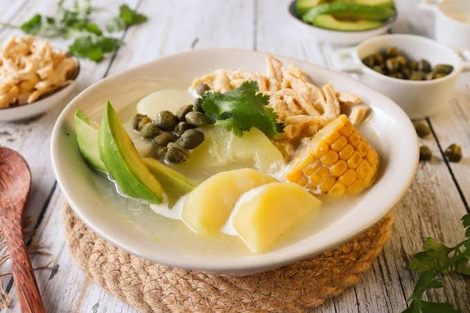

Ajiaco
Ingredientes
- Pollo: 1 pechuga completa.
- Papa sabanera: aporta consistencia y cuerpo al caldo.
- Papa pastusa: ayuda a espesar la sopa.
- Papa criolla (amarilla): se deshace y aporta el color y la textura característicos.
- Mazorca: de 2 a 4 mazorcas tiernas cortadas en trozos.
- Guascas: 1 manojo, fresco o seco; define el sabor del ajiaco.
- Otros: tallos de cebolla larga (cebolla junca), dientes de ajo, cilantro y sal al gusto.
- Agua: suficiente para cubrir los ingredientes (aproximadamente de 1,5 a 2 litros).
Acompañamientos para servir
- Crema de leche
- Alcaparras
- Aguacate en rebanadas
- Arroz blanco
